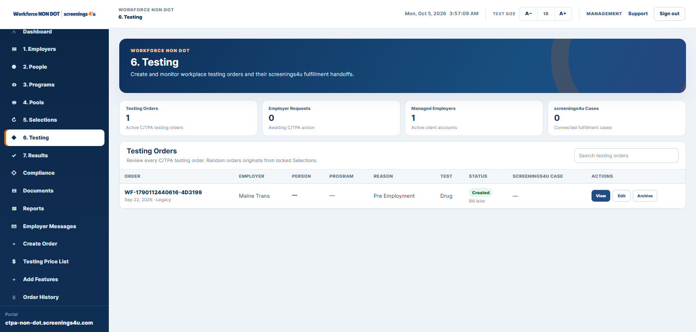

Employee & Program Setup
Understand how company records, people, programs, locations, and account users work together.
Explore Employer SetupExplore setup guides, testing workflows, compliance resources, implementation help, and platform guidance for Employers and C/TPAs.

Use these practical starting points to understand how Workforce NON-DOT connects people, programs, testing, compliance, documents, reporting, and account operations.
Understand how company records, people, programs, locations, and account users work together.
Explore Employer SetupSee how a C/TPA organizes employer clients, people, programs, pools, billing, and portal access.
Explore C/TPA SetupFollow eligibility, pool participation, selection history, and testing-order handoff.
Explore TestingKeep documents, acknowledgments, post-accident activity, tasks, and compliance records connected.
Explore ComplianceUnderstand standard reports, advanced reporting, account visibility, and enterprise audit history.
Explore ReportingPrepare account structure, users, workforce data, workflows, and connected services before launch.
Talk to Our TeamUse these paths to see how major NON-DOT workforce workflows connect inside the platform.

Connect employee or driver information with programs, testing, documents, and workforce history.
Read the guide →
Keep eligible people, pool membership, random events, and testing activity connected.
Read the guide →
Understand how testing requests, collection activity, status, and results move through the workflow.
Read the guide →
Use policies, acknowledgments, tasks, post-accident activity, documents, and audit history to keep records organized.
Read the guide →Jump directly into the part of Workforce NON-DOT that matches the work you are trying to manage.
See how people, programs, testing, compliance, documents, reporting, and account tools work together.
Explore platform → EMPLOYERSDirect Employer OperationsManage your own workforce, programs, testing activity, records, reporting, and enterprise controls.
Explore Employers → C/TPAClient Portfolio OperationsManage employer clients, people, pools, testing, billing, customer portals, and enterprise administration.
Explore C/TPA → TESTINGNON-DOT Testing WorkflowsReview testing services, random workflows, orders, collections, status tracking, and results.
Explore testing → SCREENINGBackground ScreeningConnect pre-employment and workforce screening services to the people and organizations requesting them.
Explore screening → HEALTHOccupational HealthCoordinate clinic and provider services while keeping the service record tied to the workforce context.
Explore health →Workforce NON-DOT is the operating system. These service areas can connect back to the organization, person, program, and request that generated the work.
Review NON-DOT testing options, collection support, observed testing, and service coordination.
View testing services →Use provider-connected screening workflows for pre-employment and ongoing workforce needs.
View screening →Coordinate fit testing, audiometry, physicals, and other occupational health services.
View occupational health →Use policy creation, review, workforce acknowledgments, and implementation support when needed.
View compliance services →Plan account structure, workforce imports, program setup, user access, and implementation support.
Plan implementation →Review Employer and C/TPA Essential, Professional, and Enterprise capabilities and monthly pricing.
Compare plans →Compare plans, request a demo, or contact the Workforce NON-DOT team for help with software, implementation, or connected services.
Start with Employer Software to understand how people, programs, testing, compliance, documents, and reporting fit together.
Start with the C/TPA page for employer-client management, consortium pools, billing, portal delivery, and enterprise administration.
No. Testing, screening, occupational health, and other fulfillment services are purchased separately unless specifically included.
Yes. Implementation support can include account configuration, data preparation, program setup, user access, and workflow planning.
Use the Workforce NON-DOT login directory to open the portal assigned to your organization or role.
Use the Pricing page to compare the live Employer and C/TPA feature matrix stored in Workforce.